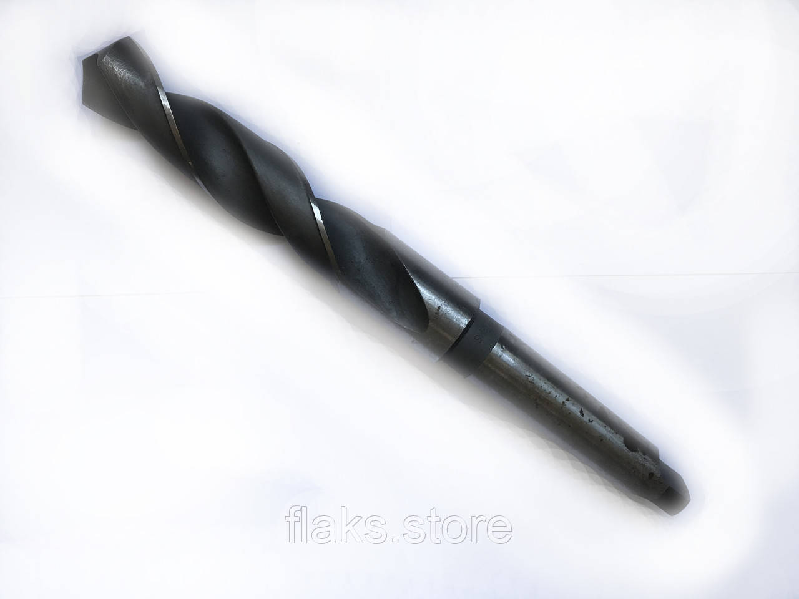

Свердла кх твердосплавніСверла кх твердосплавные
Свердло к/х ф 23.0 ВК8 Фрезер 245х115 КМ3 тело Р6М5Сверло к/х ф 23.0 ВК8 Фрезер 245х115 КМ3 тело Р6М5
ОписОписание
Свердло к/х ф 23.0 ВК8 Фрезер 245х115 КМ3 тело Р6М5 — професійний металорізальний інструмент для свердління отворів у металі. Основні параметри: діаметр Ø 23.0 мм, розмір 245×115 мм та КМ3. Виготовлено з матеріалу швидкорізальна сталь Р6М5, що забезпечує стійкість різальної кромки при обробці конструкційних і легованих сталей, чавуну та кольорових металів. Виробник: Фрезер. Інструмент перевірений і готовий до відвантаження. В наявності 9 шт. на складі у Харкові. Ціна 1800 грн без ПДВ. Опт і роздріб, відправлення по всій Україні. Замовлення від 2 000 грн.Сверло к/х ф 23.0 ВК8 Фрезер 245х115 КМ3 тело Р6М5 — профессиональный металлорежущий инструмент для сверления отверстий в металле. Основные параметры: диаметр Ø 23.0 мм, размер 245×115 мм и КМ3. Изготовлен из материала быстрорежущая сталь Р6М5, что обеспечивает стойкость режущей кромки при обработке конструкционных и легированных сталей, чугуна и цветных металлов. Производитель: Фрезер. Инструмент проверен и готов к отгрузке. В наличии 9 шт. на складе в Харькове. Цена 1800 грн без НДС. Опт и розница, отправка по всей Украине. Заказ от 2 000 грн.
ХарактеристикиХарактеристики
| Тип інструментуТип инструмента | СвердлоСверло |
|---|---|
| КатегоріяКатегория | Свердла кх твердосплавніСверла кх твердосплавные |
| Діаметр ØДиаметр Ø | 23.0 мм23.0 мм |
| РозміриРазмеры | 245×115 мм245×115 мм |
| МатеріалМатериал | Р6М5 / ВК8Р6М5 / ВК8 |
| ХвостовикХвостовик | конічнийконический |
| Конус МорзеКонус Морзе | КМ3КМ3 |
| ВиробникПроизводитель | ФрезерФрезер |
| СтанСостояние | новийновый |
| Код товаруКод товара | FLK-04949FLK-04949 |
| НаявністьНаличие | 9 шт.9 шт. |